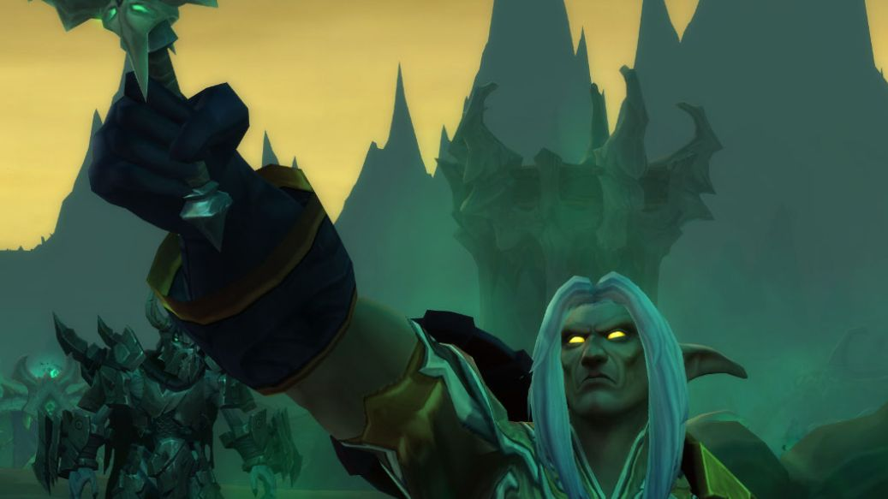

News › Correctifs du 16 novembre
Correctifs du 16 novembre : Furie-des-vents, Étreinte vampirique et pêche
17 novembre 2026
Une nouvelle série de correctifs est arrivée dans la nuit. Les chamans et les prêtres Ombre sont les plus touchés, et plusieurs quêtes pénibles deviennent plus simples.

Classes
- Chaman : le Totem Furie-des-vents était trop fort. Ses attaques ignoraient l'armure et n'avaient pas de temps de recharge interne : c'est corrigé. Plusieurs techniques d'autres classes (Heurt de bouclier, Coup de bouclier, Frappe sacrée…) ne peuvent plus le déclencher. En Amélioration, l'Arme du Maelström ne profite plus de deux sorts à la fois.
- Prêtre Ombre : l'Étreinte vampirique soigne le groupe à hauteur de 10 % des dégâts d'Ombre au lieu de 20 %. Le prêtre lui-même reçoit le double. Aucun changement en solo. Sombre inspiration ne se cumule plus quand plusieurs prêtres Ombre sont dans le même groupe.
- Guerrier Fureur : Colère déchaînée, Rafale et Frappes téméraires se déclenchent maintenant bien avec Enchaînement et Frappe héroïque. Bonne nouvelle pour les guerriers Fureur.
- Druide : Croissance sauvage repart bien en temps de recharge, et Genèse augmente bien le saignement de Traquenard.
- Voleur : les poisons ne dépassent plus le rang maximum.
Donjons
- Cité submergée : le capitaine Lèveffroi peut maintenant être étourdi, et le « Pyromancien » Braxton réagit enfin en combat.
- Temple englouti : les statues de serpent de la Fosse d'Atal'alarion ne restent plus bloquées si on les active dans le mauvais ordre.
Quêtes
- Les Foulards rouges sang tombent plus souvent.
- Le sorcier-docteur Zum'rah apparaît de nouveau pendant « The Talisman of Kazdor ».
- Les prisonniers libérés comptent pour tout le groupe dans « On n'abandonne personne ».
- Les Hurleurs ont un nouveau point d'apparition sur la côte de l'Île de l'effroi pour « Esprits de Hurleurs ».
- La quête répétable « Prime de la poche à eau » ne donne plus d'expérience.
- Un blocage de la chaîne « The Return of the King? » à Theramore est corrigé.
Et aussi
- Campements : le Râtelier de pêche donne maintenant de l'appât à tout le monde, et les poissons gonflés qu'on y attrape ont un meilleur butin.
- Bassin Arathi : mourir près de la mine ne t'envoie plus dans un cimetière des Rives Claires.
- La formule d'enchantement de bottes « Vitesse » obtenue par réputation devient liée quand ramassée.
Hôtel des ventes : la baisse du dépôt minimum à 1 cuivre n'est toujours pas en jeu. Elle est attendue avec la maintenance européenne de mercredi 18 novembre, de 3 h à 4 h. Mise à jour du 19 novembre : c'est fait, le dépôt minimum est descendu à 10 pièces de cuivre.
Source : JudgeHype, d'après les notes de correctifs de Blizzard ; Kami Labs pour l'hôtel des ventes.